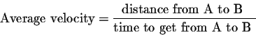
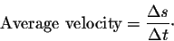

Derivative can be used in two different ways. One of the ways to implement derivatives is physical as the rate of change. The second way is geometrical as the slope of the curve.
Velocity Example:
Velocity is a good example as to how derivatives are used to calculate change(delta).
 There are rules that we use to find various deriveratives.
Some of those rules are
Contants derivatives are 0.
Slope of a line such as 2x is 2, or 6x is 6.
And so on.
Derivatives can also be written as:
d/dx
For example:
(d/dx)sin x
After being derived:
sin x'